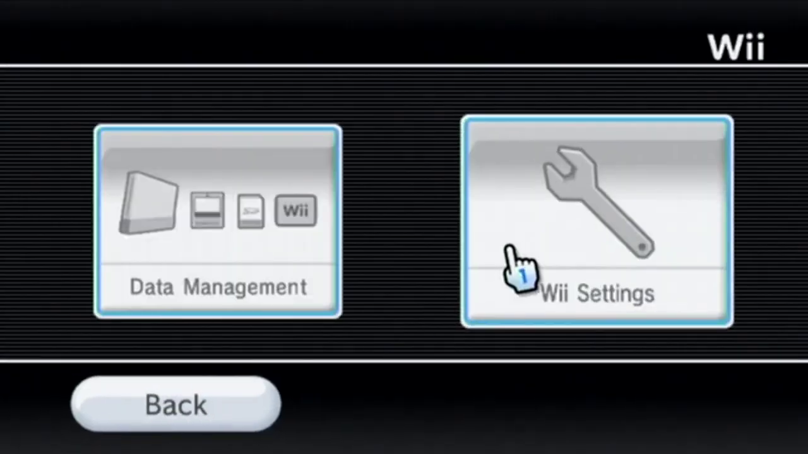
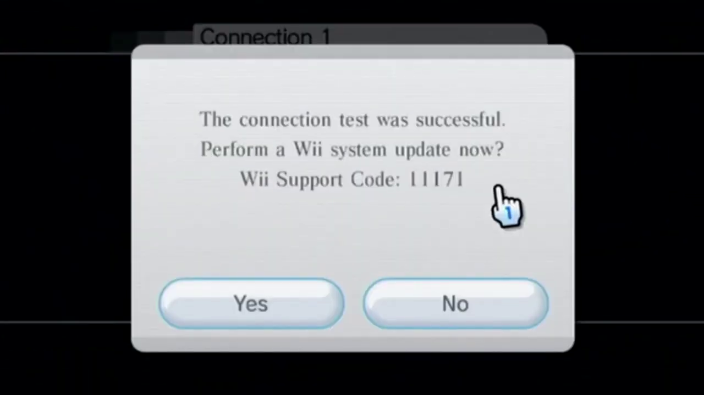
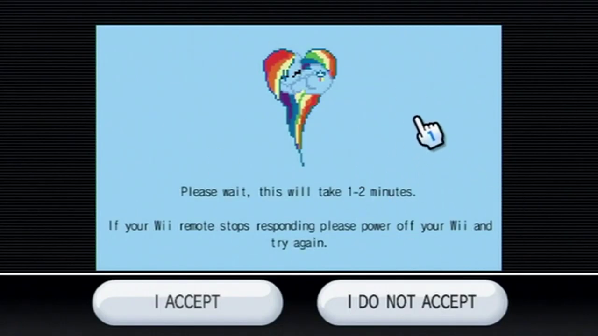

Str2hax
Str2hax is an exploit for homebrewing the Wii which utilises it's EULA.
For this guide, you will need:
• A Wii with an internet connection
• An SD card formatted to FAT32
1. Go to the Wii Settings.
2. Go to Internet.
3. Go to Connection Settings.

4. Go to Connection 1 and configure an internet connection.

5. Perform a connection test and a Wii system update if prompted.
6. Click connection 1 and select change settings.
7. Scroll across with the arrows until you reach Auto Obtain DNS. Select No, then advanced settings.
8. Set the Primary DNS to 18.188.135.9 and the secondary DNS to 1.1.1.1 Save this and run a connection test.
9. Return back to the main internet settings and select user agreements or Agreement/ Contact. You should now see this screen
10. The exploit will now download. Do not press I agree or I disagree.